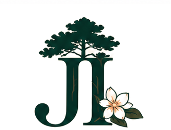

Les Jasmins d'IspeLes Jasmins d'Ispe · Biscarrosse
Les adresses testées et approuvées autour de la maison — plages, restaurants, glaces, marchés et balades pour des vacances parfaites dans les Landes.
La plage du quartier — accessible à pied en quelques minutes derrière le club de voile. Eau douce, calme, idéale pour les enfants. En voiture : parking payant ou accès via la piste cyclable.
À vélo depuis la maison, le long du lac. Plage du lac de Cazaux avec bar (La Paillote) et école nautique H2O à deux pas. Le spot parfait pour une sortie vélo qui se termine les pieds dans l'eau.
La grande plage océan de référence. Rouleaux garantis, idéale pour le surf. Une jolie balade nature longe le trait de côte jusqu'à Biscarrosse centre. Arriver tôt en juillet-août.
L'alternative gratuite au Vivier. Plus étroite à marée haute mais parking gratuit et moins fréquentée. Parfaite pour une sortie spontanée sans se soucier du stationnement.
Les meilleures pizzas du coin — sans discussion. Simple, généreux, toujours bon. À réserver en avance en juillet-août.
Les meilleures pâtes de Biscarrosse, à 20 mètres de Chez Julia. Mention spéciale pour les pâtes à la pistache — à ne manquer sous aucun prétexte.
Belle vue sur le lac de Biscarrosse-Parentis, ambiance toujours appréciée. Associé au Café de la Plage à Biscarrosse Plage — les deux adresses partagent le même esprit. En été, belles soirées organisées, parfait après une journée à l'Aqualand suivie d'un apéro au bord de l'eau. Et si vous vous demandez pourquoi un restaurant du bord du lac s'appelle le Latécoère — la réponse est à la base d'hydravions.
Bar-restaurant à Biscarrosse Plage, ambiance estivale et décontractée. Belle terrasse, clientèle fidèle. Le genre d'endroit où l'on revient chaque été.
Restaurant à Biscarrosse Plage, associé au Latécoère sur le lac. On préfère personnellement un verre au bord de l'eau plutôt qu'à l'Idylle, mais l'expérience y reste très sympathique.
BBQ géant et pistes de pétanque sur place — l'ambiance estivale landaise par excellence. Parfait pour une soirée détendue en famille ou entre amis.
En face du Maquis, pétanque aussi — mais les cocktails y sont plus sophistiqués (et plus onéreux). Pour les amateurs de mixologie qui veulent prolonger la soirée avec style.
Smoothies très frais et bons poké bowls — une touche locale appréciable pour déjeuner léger après la plage. L'adresse idéale pour manger sain sans se prendre la tête.
Tenu par un maître pâtissier formé dans des établissements très haut de gamme et une hôtesse hors pair, également professeure de yoga. Sandwichs et pancakes à tomber, jolis cakes et créations gourmandes. Le QG brunch & thé de Biscarrosse — une expérience à part entière, pas juste un café.
Topissime — et moins fréquentée que les autres boulangeries du coin. Le secret des habitués pour des croissants sans faire la queue. Idéale le matin avant la plage.
Bar sur la plage de Mayotte, accessible à vélo depuis la maison. L'adresse idéale pour un verre au coucher du soleil les pieds dans le sable du lac. Vue dégagée sur l'eau, ambiance vacances garantie.
La valeur sûre pour l'apéro au coucher du soleil sur le lac. Ambiance estivale, vue dégagée sur l'eau. Le genre d'endroit où l'on reste bien plus longtemps que prévu.
Une autre bonne option pour le coucher du soleil. Ambiance plus tranquille — parfait si le Dream Beach est bondé. À tester aussi pour changer d'atmosphère en cours de séjour.
L'adresse glaces de Biscarrosse. Des parfums originaux, des produits de qualité et une file d'attente qui en dit long sur la réputation. Le passage obligé après la plage ou le marché. Prévoir d'attendre un peu en août — ça vaut largement le coup.
Juste à côté de la Paillote sur la plage de Mayotte, accessible à vélo. Voile, kitesurf et activités nautiques sur le lac de Cazaux. Idéal pour les débutants comme les confirmés — cours à la journée ou à la demi-journée.
La piste cyclable longe le lac de Cazaux depuis la plage jusqu'à Sanguinet — une balade à faire absolument. Attention avec les enfants : la portion côté Maguide est assez exigeante. Compter 1h30 aller-retour tranquillement.
Un sac avec demi-série de clubs et chariot est disponible à la maison — pas besoin d'apporter votre matériel. Beau parcours en forêt landaise, accessible aux débutants comme aux confirmés.
Accessibles depuis plusieurs chemins autour de la maison. Pins maritimes, senteurs résineuses, calme absolu. Idéal le matin tôt ou en fin d'après-midi. Attention aux moustiques en soirée — prévoyez un répulsif.
L'incontournable de l'été en famille. Prévoir la journée entière. Combinez avec un dîner au Latécoère ou un apéro chez Kiki pour une soirée parfaite. Tickets moins chers réservés en ligne.
Dans les années 1930-40, Biscarrosse était le plus grand port d'hydravions d'Europe. C'est depuis le lac de Biscarrosse-Parentis que décollaient les appareils Latécoère et Farman reliant l'Europe à l'Amérique du Sud et à l'Afrique — une époque où traverser l'Atlantique tenait de l'exploit. Le musée de l'hydraviation retrace cette histoire fascinante, avec des hydravions restaurés et des archives exceptionnelles. Un détour qui surprend toujours — et qui explique au passage pourquoi le restaurant du bord du lac s'appelle le Latécoère.
Le secret des habitués — filez à vélo jusqu'à Navarrosse. Fraîcheur garantie, prix attractifs. Et en prime : rôtisserie, huîtres, glaces et café. Un arrêt qui peut facilement se transformer en déjeuner complet. Notre adresse préférée pour les courses fraîches.
Le marché couvert de Biscarrosse — producteurs locaux, fromages, charcuterie, fruits et légumes de saison. L'ambiance marché du Sud-Ouest au meilleur de l'été. Idéal en semaine le matin.
De très bons produits familiaux — pâtes, huiles, conserves. L'endroit parfait pour cuisiner un dîner maison haut de gamme ou rapporter de belles choses dans ses valises.
De très bons crus locaux et un vermouth maison à essayer absolument — une jolie réinterprétation à la landaise. Repartez avec quelques bouteilles dans la valise.
Les Jasmins d'Ispe
Toutes ces adresses vous attendent à quelques minutes de la maison. Il ne reste plus qu'à réserver votre séjour.
Réserver la maison